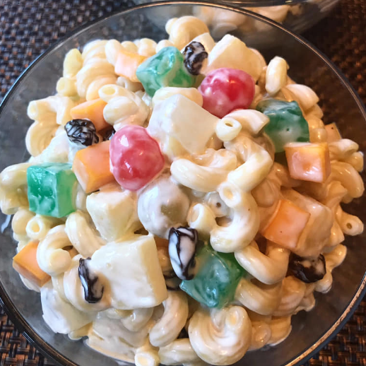

Chicken Macaroni Salad

Description
A taste of Macaroni Salad that will surely satisfy your palette.
This yummy treat is always present at any occassion and is one of my favorites.
By Elleb
Ingredients
Procedure
- Boil the macaroni pasta. Just follow the packaging instruction.
- Cut the boiled chicken fillet into strips, set aside.
- Cut the cheddar cheese into tiny dice.
- In a clean bowl, mix all the ingredients together. Stir it well.
- Put the mixture in a container, cover it and put inside the refrigerator.
- After some time, when it is cold, you can now eat and enjoy your yummy macaroni salad.
Enjoy and satisfy that pallete!
Back to main
Back on top
Next